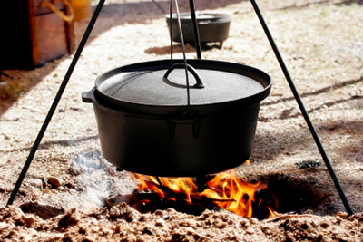

Welcome to Native Cooking of Utah!
If you love to cook like we do, you should enjoy looking around this site. Take a look at our Recipes and take the opportunity to complete our survey.



Hover over thumbnails to change image
Pioneer crockpot
What our customers have been saying

Real men are not afraid to try Dutch oven cooking. I made an investment in equipment, but it sat in my garage until I found your wonderful recipes online... more...
St. George, Utah